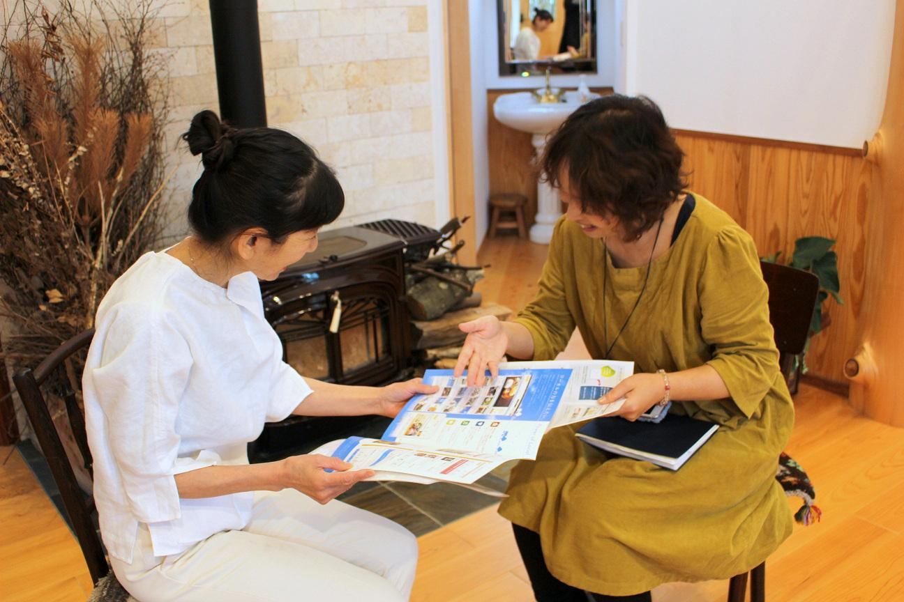
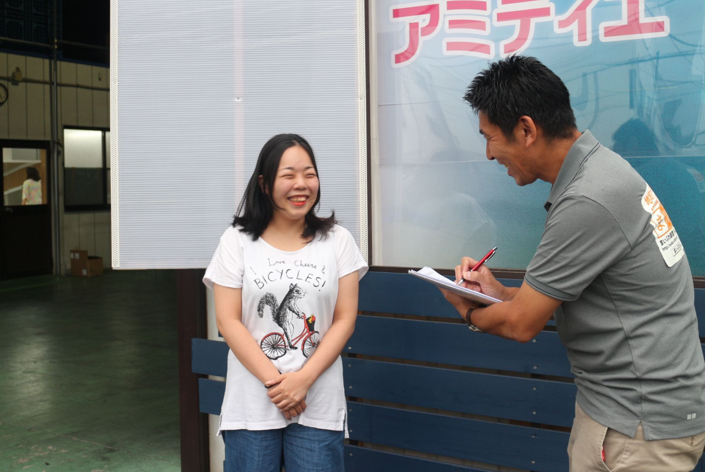

仕組みをつくり、支える
- サービス基盤の開発・保守
- AI機能の提供
- 研修・運営ノウハウの共有
まいぷれは、地域のお店や企業、人、暮らしの情報をつなぐ
「地域情報・経営支援プラットフォーム」です。
地域の担当者が街を歩き、お店を訪ね、そこで働く人の想いやこだわりを聞く。そうして集めた情報を、地域情報サイト「まいぷれ」をはじめ、検索や地図、SNSなどを通じて届けています。
お店には、自分たちの魅力を伝え、地域のお客様と出会うきっかけを。暮らす人には、身近にあるお店や活動を知り、街をもっと楽しむきっかけを。情報の発信と日々の支援を通じて、地域の中に新しいつながりを育てます。

情報の内容や各地域の取り組みに応じて、届ける媒体を組み合わせます。
商品へのこだわり、サービスに込めた想い、店主の人柄。お店には、価格や評価だけでは伝わらない魅力があります。一方で、日々の仕事に追われ、その魅力を十分に発信できないお店も少なくありません。
まいぷれは、まずお店の話を聞くところから始めます。届けたいお客様や経営上の悩みを共有し、取材・撮影を通じて、そのお店ならではの特徴を言葉と写真にしていきます。
お店の強み、届けたい相手、困りごとを共有。
こだわりや人柄を、言葉と写真で伝わる形に。
ショップページを用意し、日々のお知らせを発信。
閲覧状況や反応を見て、次に伝える内容を考える。
ショップページを整えた後も、新商品や季節のお知らせなどの発信を支援。ページをつくって終わらず、日々の情報発信に取り組めるよう支えます。
お店向けのサービスを見る
「何を書けばよいか分からない」「新しいサービスをどう知らせればよいか」。そんなとき、相談できる担当者が地域にいること。それが、まいぷれの支援の土台です。
担当者は、お店への訪問や取材を重ねながら、その街と、そこで商いをする人への理解を深めます。操作方法を説明するだけでなく、お店の強みや伝えたいことを一緒に整理し、発信につなげます。
地域でさまざまなお店や人と接しているからこそ、事業者同士の紹介や、新しい取り組みの相談につながることもあります。身近な相談相手として、お店の挑戦に寄り添います。
お店のことを知っていても、文章を考え、複数の媒体へ投稿するには時間がかかります。まいぷれくんは、その負担を減らし、お店が情報発信を続けるためのAIサービスです。
お店の特徴や伝えたい内容をもとに、写真やテーマから投稿文の下書きを作成。お店の方が内容を確認・修正し、承認したうえで、まいぷれや連携先のGoogleビジネスプロフィール、Instagramへ発信できます。
新商品や季節の話題など、伝えたいことを用意。
お店の情報を踏まえ、媒体に合わせた文章を作成。
内容を確かめ、必要に応じて修正してから発信。
まいぷれ・Googleマップ・Instagramへ。
地域の担当者が魅力を引き出し、AIが文章づくりや投稿を支え、お店が届ける内容を決める。人とAIの役割を組み合わせることで、忙しい毎日の中でも発信に取り組みやすい環境をつくります。
利用できる機能はプランや連携設定によって異なります。図は利用の流れを示したものです。
まいぷれくんを詳しく見るまいぷれは、FLNと各地域の運営パートナーが、それぞれの強みを持ち寄って運営しています。
全国の運営パートナーが事例や工夫を共有することで、一つの地域で得られた経験を、別の地域の取り組みに活かしています。共通の仕組みを使いながら、各地域の個性や課題に向き合う。それが、まいぷれの広がり方です。
運営パートナーについてお店への取材や日々の相談を重ねると、地域で必要とされていることが見えてきます。販促物をつくりたい、地域の商品を知ってもらいたい、お店同士でイベントを開きたい。そうした声が、次の仕事のきっかけになります。
まいぷれの活動は、情報掲載にとどまりません。地域で築いた関係をもとに、販促支援やイベント、企業と地域をつなぐ企画、自治体との情報発信などへ広がっています。
どの地域でも同じ展開を目指すのではなく、その街の課題と、運営する人たちの強みを組み合わせる。お店への継続的な支援を土台に、地域ごとの可能性を事業にしていきます。
事業の広がりを見る